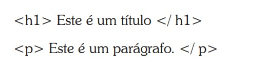
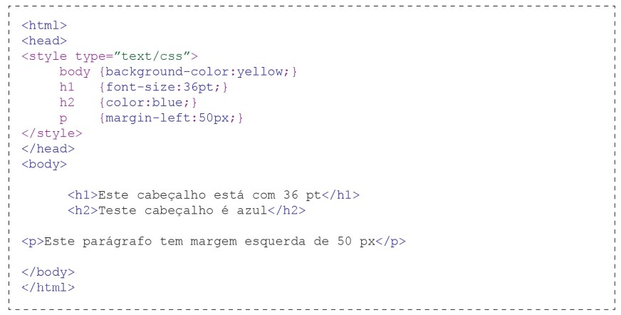
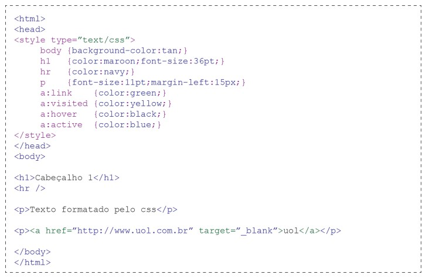

O propósito do HTML é conter tags de formatação de documento, o HTML define o conteúdo do documento e como exibido:
Quando tags como <font> e atributos de cor foram adicionados à especificação HTML 3.2, começou um pesadelo para os desenvolvedores web. Para resolver este problema, o World Wide Web Consortium (W3C), especificou CSS.
Em HTML 4.0, toda a formatação pode ser removida do documento HTML e armazenada em um arquivo CSS separado. Todos os browsers suportam CSS hoje.
CSS define como elementos HTML devem ser exibidos.
Estilos são normalmente guardados em arquivos externos .css.
Folhas de estilo externas permitem que você altere a aparência e o layout de todas as páginas de um site, apenas editando um único arquivo.
Uma regra CSS tem duas partes principais
O seletor é normalmente o elemento HTML que você deseja criar o estilo
Cada declaração consiste uma propriedade e um valor.
A propriedade é o atributo de estilo que você deseja alterar.
Cada propriedade tem um valor.
 Através do css você pode criar um estilo para um elemento do HTML, o css permite criar um estilo para um seletor através do id e class.
O id é usado para especificar um estilo para um elemento único, o seletor id é atribuído ao id do elemento HTML e definido com o caracter “#”.
Exemplo:
Hello World!
Este não foi afetado pelo estilo.
A classe é usada para especificar um estilo para um grupo de elementos, ela permite que você crie um estilo para vários elementos do HTML com a mesma classe.
Exemplo:Hello World!
Este não foi afetado pelo estilo.
Existem trêes maneira de se utilizar o estilo:
O estilo externo é ideal quando a formatação deve ser aplicado a várias páginas. Com um arquivo externo você pode alterar um formato e ele será automaticamente em todo o projeto.
Cada página deve ter um link para o estilo usando <link>, essa tag deve estar dentro da seção <head>
| <head> |
| <link rel=”stylesheet” type=”text/css” href=”mystyle.css” /> |
| </head> |